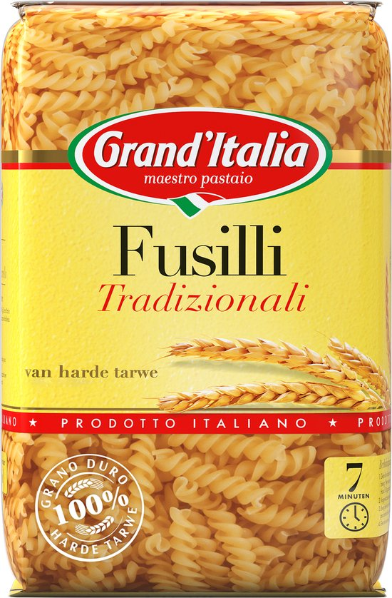
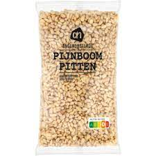
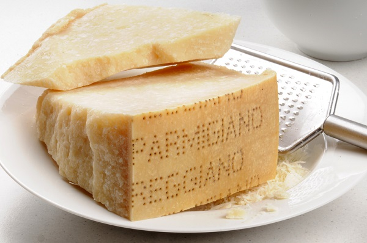
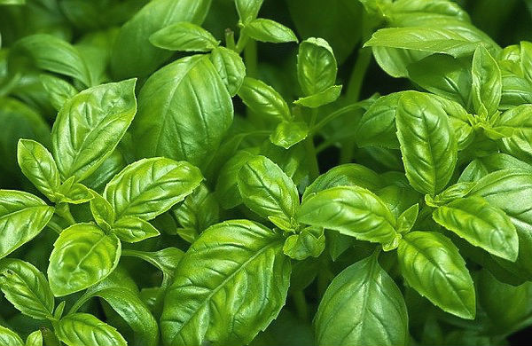
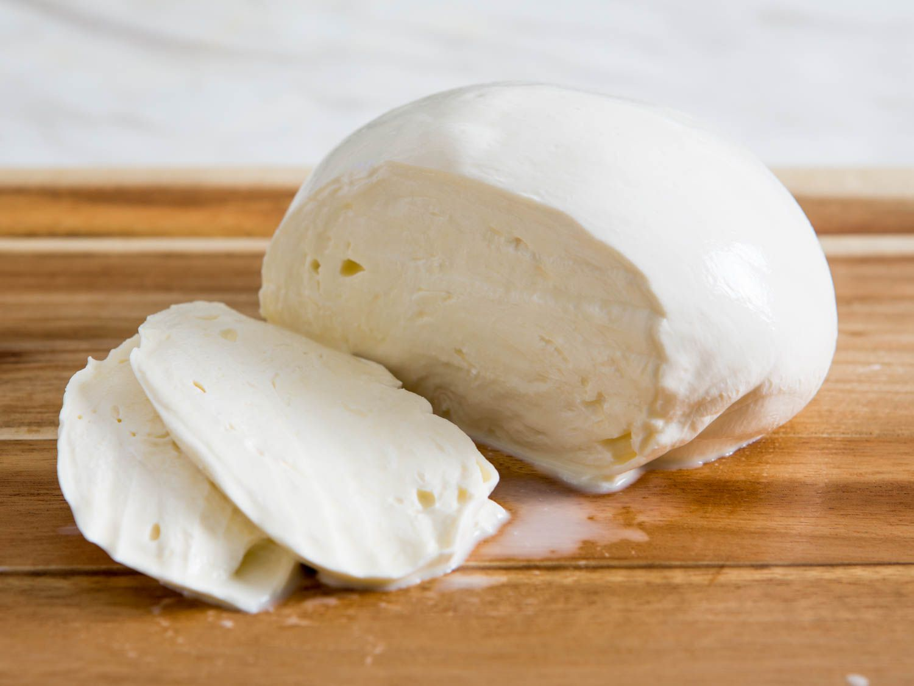
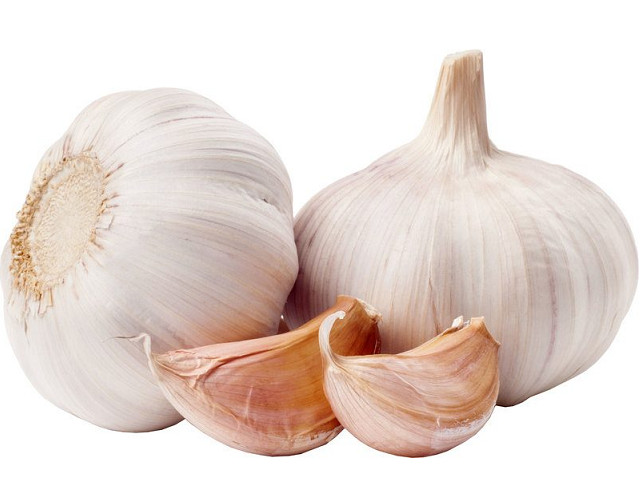
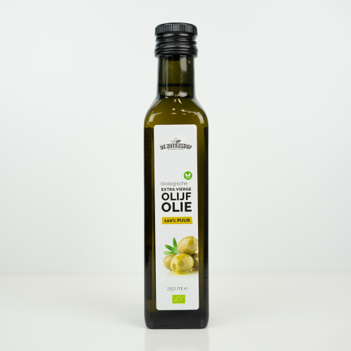
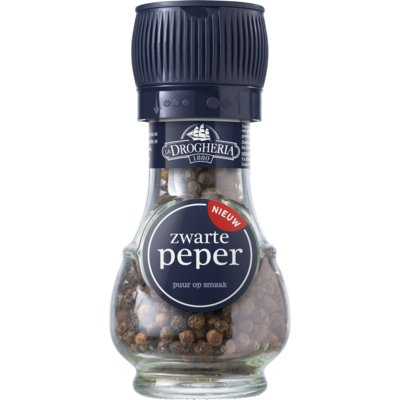
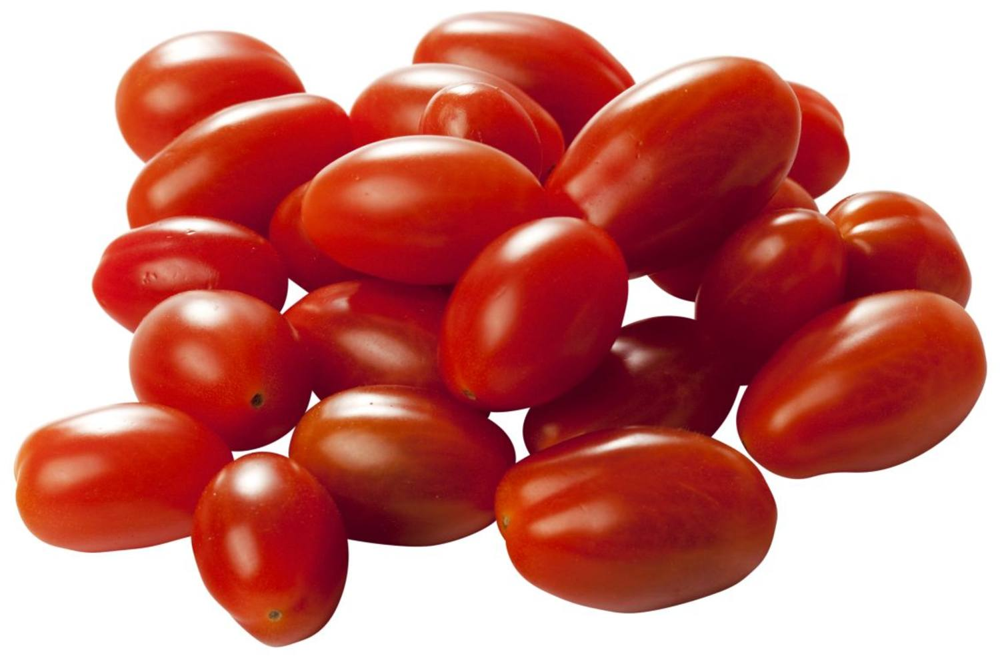

Inleiding
Ik heb het gerecht pasta pesto gekozen omdat het me altijd doet denken aan de tijd dat ik nog in de lagere school zat. Toen ik terug kwam van school en ik me moest haasten naar de voetbal, maakte mijn oma altijd pasta pesto.
Ik ben deze traditie blijven behouden en mijn oma leerde me hoe ik de beste zelfgemaakte pesto kon maken.
Ingrediëntenlijst
| Foto's | Ingrediënten |
|---|---|
|  | 300 gram pasta |
| > | 30 gram pijnboompitten |
| > | 50 gram parmezaanse kaas |
| > | 50 gram basilicumblaadjes |
| > | 1 bol mozzarella |
| > | 2 knoflookteentjes |
|  | 100 milliliter olijfolie |
| > | snuifje zout |
| > | snuifje peper |
| > | snoeptomaatjes |
bereiden
Stap 1:Zelfgemaakte pesto
Rooster de pijnboompitten in een droge koekenpan op laag vuur tot ze lichtbruin worden. Let op dat ze niet verbranden. Haal ze van het vuur en laat ze afkoelen.
Pel de knoflookteentjes en doe ze samen met de geroosterde pijnboompitten en basilicumblaadjes in een blender.
Voeg de geraspte Parmezaanse kaas toe en meng alles tot een grove massa.
Voeg geleidelijk de olijfolie toe terwijl je blijft mixen tot je een gladde pesto krijgt. Breng op smaak met zout en peper.
Stap 2:Pasta koken
Breng een grote pan met licht gezouten water aan de kook. Voeg de pasta toe en kook volgens de aanwijzingen op de verpakking tot het al dente is.
Giet de pasta af, maar bewaar een kopje van het kookwater.
Stap 3:Samenvoegen
Doe de gekookte pasta terug in de pan en voeg de zelfgemaakte pesto toe. Meng goed zodat de pesto gelijkmatig verdeeld is over de pasta.
Voeg de gehalveerde snoeptomaatjes toe en roer ze voorzichtig door de pasta.
Voeg de stukjes mozzarella toe en meng alles nogmaals voorzichtig door elkaar.
Als de pasta te droog is, kun je wat van het bewaarde kookwater toevoegen om de saus smeuïger te maken.
Stap 4:Serveren
Verdeel de pasta pesto met tomaatjes en mozzarella over borden.
Garneer eventueel met extra basilicumblaadjes en een snufje zwarte peper.
Serveer direct en geniet ervan!
Tips
- Gebruik verse basilicum voor de beste smaak.
- Voeg een handvol geroosterde pijnboompitten toe voor extra textuur.
- Experimenteer met verschillende kazen zoals pecorino of grana padano voor variatie.
- Garneer met verse basilicumblaadjes en extra geraspte Parmezaanse kaas voor een mooie presentatie.
- Als je van een pittige smaak houdt, voeg dan een snufje gedroogde chilivlokken toe aan de pasta.
- Voor een extra romige saus kun je een scheutje room toevoegen aan de pasta voordat je de pesto mengt.